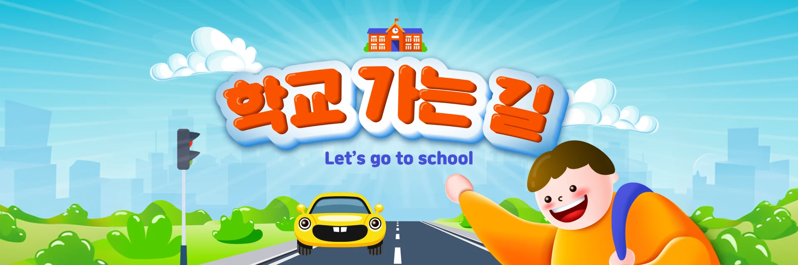
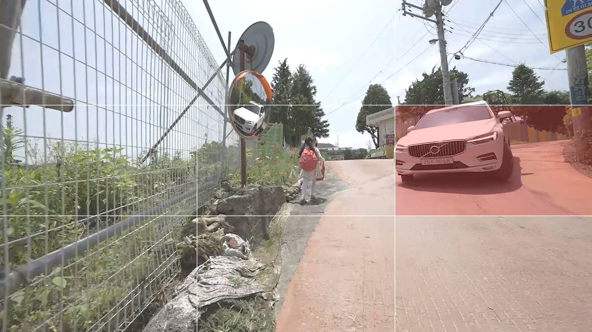
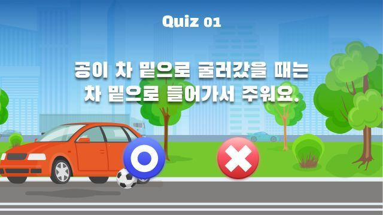
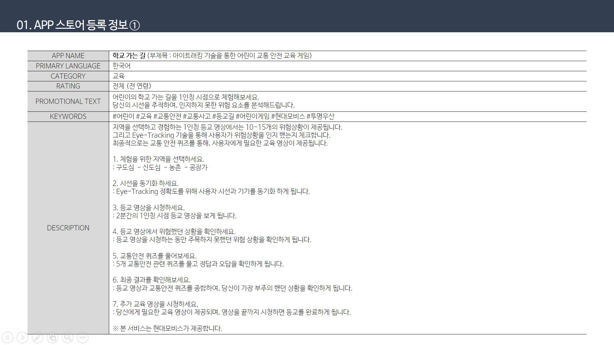
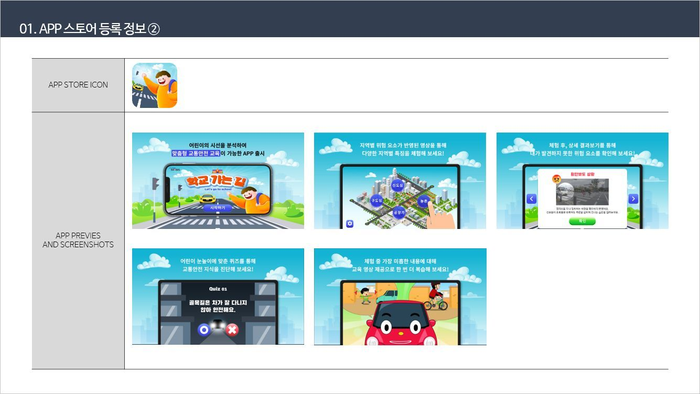
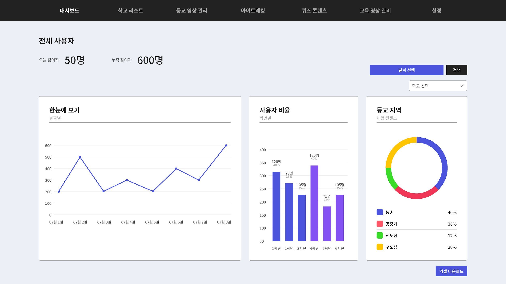

Road Safety Education / Mobile Experience
실제 등굣길과 시선 데이터를 연결해, 어린이가 위험을 스스로 인지하는 교통안전 교육 앱을 기획했습니다.
1인칭 등굣길 영상에서 어린이의 시선을 추적하고, 놓친 위험 요소를 퀴즈와 맞춤형 피드백으로 다시 학습하게 하는 디지털 교육 경험을 설계했습니다. 학교별 운영 데이터까지 연결해 교육 현황을 지속적으로 확인할 수 있도록 구성했습니다.
42전국 참여 초등학교
17K연간 교육 이수 학생
CMS학교별 운영·리포트 관리
기간2021.06 – 2024.12
프로젝트현대모비스 학교 가는 길 앱
담당서비스 기획 · 학습 UX · 운영 구조 · QA

교통안전 교육을 영상 시청에서 행동 인지 학습으로 전환했습니다.
어린이 보행자의 실제 통학 환경을 1인칭 영상으로 재현하고, 시선 데이터로 위험 요소를 인지했는지 확인하는 모바일 교육 앱입니다. 단순히 내용을 전달하는 데 그치지 않고, 사용자가 놓친 상황을 퀴즈와 피드백으로 다시 학습하도록 경험 전체를 설계했습니다.
실제 행동 변화를 만들려면 ‘봤는지’와 ‘이해했는지’를 함께 확인해야 했습니다.
통학로 체험과 시선 분석, 재학습이 하나의 학습 흐름으로 이어지도록 설계했습니다.
01학교 코드로 교육 세션 시작
021인칭 등굣길 영상 체험
03위험 요소에 대한 시선 데이터 수집
04퀴즈로 위험 인지 결과 확인
05놓친 상황 중심의 맞춤 피드백 제공
06학교별 학습 결과와 완료 현황 집계
교육 경험과 학교 운영이 함께 작동하도록 서비스 범위를 정의했습니다.
교통안전 교육 방향과 전국 학교 운영 기준 협의
교육 운영, 학생 참여와 현장 피드백 제공
- 학습 경험 설계1인칭 영상·시선 추적·퀴즈·피드백의 사용자 흐름 정의
- 시나리오 기획구도심·신도심·농촌·공장가 통학로의 위험 상황 구조화
- 운영 기준 정의학교 코드, 학습 완료, 결과 리포트와 관리자 기능 설계
- 구축 검증화면·콘텐츠·데이터 집계 기준을 개발 및 운영 관점에서 QA
역할 범위: 실제 통학 환경의 위험 상황을 교육 흐름으로 전환하고, 시선 데이터와 퀴즈 결과가 개인화 학습 및 학교별 운영 데이터로 이어지도록 서비스·화면·운영 요구사항을 정리했습니다.
실제 환경의 몰입감과 학습 결과의 명확성을 함께 설계했습니다.

경험 01 · 실제 통학로 재현
일상적인 등굣길 안에서 위험을 스스로 발견하게 하는 1인칭 시나리오
구도심, 신도심, 농촌, 공장가의 통학로를 실제 촬영에 참여해 구성하고, 어린이의 시선에서 위험 판단이 필요한 장면을 교육 콘텐츠로 구체화했습니다.

경험 02 · 결과 기반 재학습
놓친 위험 요소를 퀴즈와 피드백으로 다시 연결
시선 추적 결과와 퀴즈 점수를 함께 확인해 사용자가 인지하지 못한 상황을 중심으로 교육 콘텐츠를 제공하도록 학습 화면과 피드백 기준을 설계했습니다.
학습 효과와 현장 운영을 함께 고려해 구현 기준을 정리했습니다.
위험 요소의 노출보다 사용자의 시선 반응을 학습 기준으로 삼았습니다.
같은 영상을 보더라도 어린이마다 인지한 위험 요소가 다르기 때문에, 영상 재생 여부가 아니라 시선 데이터와 퀴즈 결과를 함께 사용해 학습 결과를 판단하도록 설계했습니다.
개인화 피드백이 다음 교육 행동으로 이어지도록 구성했습니다.
단순 정답·오답 안내 대신 놓친 위험 상황을 다시 이해할 수 있는 콘텐츠를 제공해, 결과 확인이 재학습으로 자연스럽게 이어지도록 정보 우선순위와 화면 전환을 정의했습니다.
학교별 코드와 관리자 데이터를 교육 운영의 기준으로 설계했습니다.
여러 학교의 참여 현황과 교육 완료 여부를 안정적으로 관리할 수 있도록 학교 코드 기반 접근, 결과 집계, 리포트 확인 기능을 하나의 CMS 운영 흐름으로 구조화했습니다.
교육 콘텐츠, 학습 화면, 운영 데이터를 연결하는 기획 근거를 구체화했습니다.

영상 체험, 시선 분석, 퀴즈와 피드백의 기능·학습 흐름을 정의한 기획 문서

위험 인지와 결과 피드백을 화면 단위로 구체화한 앱 UI 설계

학교별 교육 현황과 학습 결과를 확인하도록 구조화한 관리자 대시보드
행동 데이터를 기반으로 개인화된 교통안전 교육과 학교 운영 기반을 마련했습니다.
실제 통학로를 재현한 1인칭 영상 기반 교통안전 교육 경험 설계
시선 데이터와 퀴즈 결과를 결합한 위험 인지·맞춤형 피드백 구조 정의
전국 42개 초등학교의 교육 참여와 완료 현황을 관리하는 운영 기준 구축
17,000명 규모의 연간 교육 이수 데이터를 활용할 수 있는 CMS·리포트 구조 설계